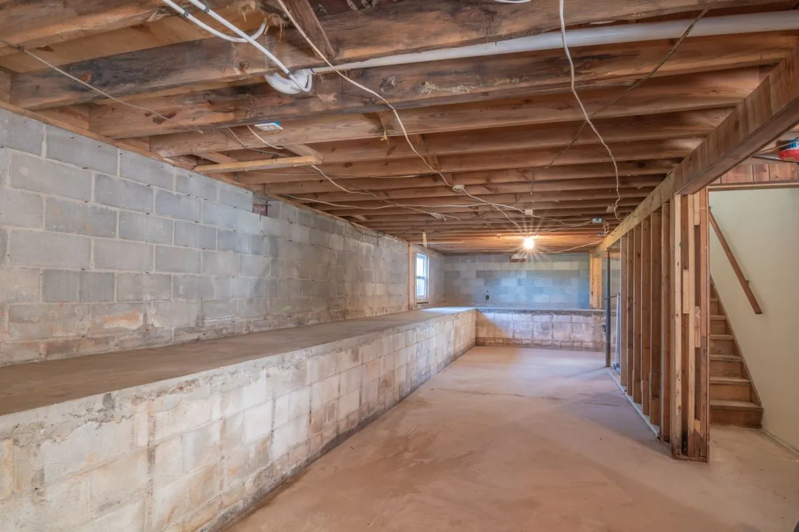

Basement floor epoxy gives you a sealed, easy-to-clean surface for a below-grade slab that would otherwise stay bare, cold, and prone to holding moisture. It is one of the most cost-effective upgrades for Spokane Valley homeowners converting a basement into a gym, workshop, or living space.

Basement slabs get the same diamond-grinding prep as a garage, but we also run a moisture test first, since below-grade concrete can carry vapor emission that affects which primer we use. Once the slab checks out, we grind, fill any cracks, and apply a moisture-mitigating primer, base coat, and topcoat, usually finished with a light slip-resistant texture for basements used as living space.
Most requests come from homeowners finishing a basement into a home gym, workshop, or rec room, or anyone tired of a cold, dusty, unsealed slab that tracks concrete dust upstairs. If your basement floor has a chalky white residue (efflorescence) or a musty smell, coating it addresses both.
Basement slabs sit below grade, in direct contact with the soil, so they naturally carry more ground moisture than a garage floor. Older Spokane Valley homes built before modern vapor barrier requirements are especially prone to this. Over time that moisture works through untreated concrete, leaving efflorescence, a chalky mineral residue that is a sign the slab needs sealing before it gets worse.
Pricing runs similarly to garage floors, $4 to $10 per square foot installed, but the total often lands lower simply because there is no vehicle traffic to plan around and less structural crack repair in newer basements. A moisture test and mitigating primer add a modest cost if your slab shows elevated vapor readings, which is common in basements built before the 1990s.
A basic penetrating sealer is cheaper but only slows moisture absorption temporarily and needs reapplication every couple of years. A full epoxy system costs more up front but creates an actual barrier layer that resists moisture, stains, and abrasion for a decade or more, which matters if the basement is finished living space rather than storage.
A quality epoxy system reduces surface moisture transmission and makes the slab far less likely to feel damp or develop a musty smell, but it will not solve an active water intrusion problem. If your basement floods or has standing water, that needs to be fixed before coating.
Yes, most flooring types can be installed over a fully cured epoxy floor, though some flooring adhesives bond better to a lightly abraded surface. Tell us your long-term plan before installation so we can leave the right finish for it.
We add a fine slip-resistant additive to the final coat on basement floors used for gyms, kids' play areas, or laundry rooms, which keeps the surface grippy even when wet without changing the look.